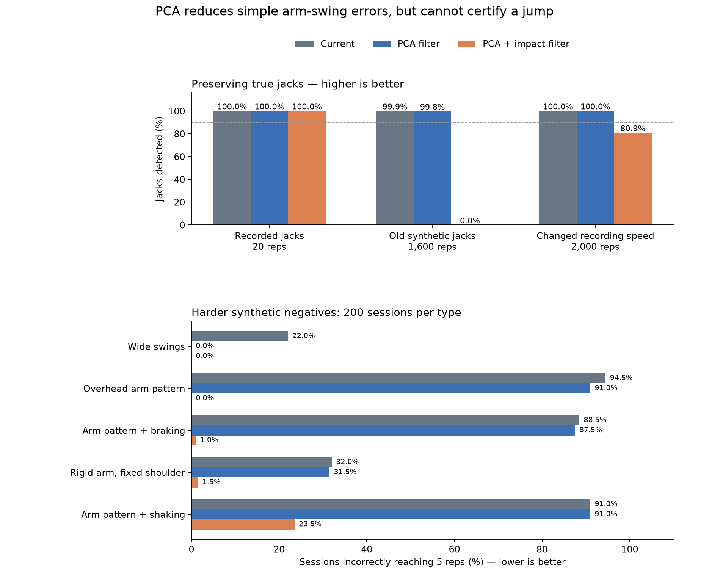
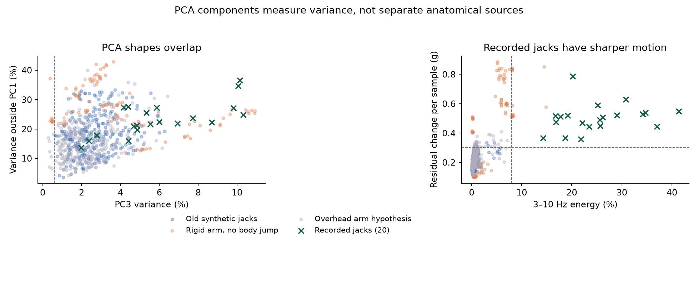
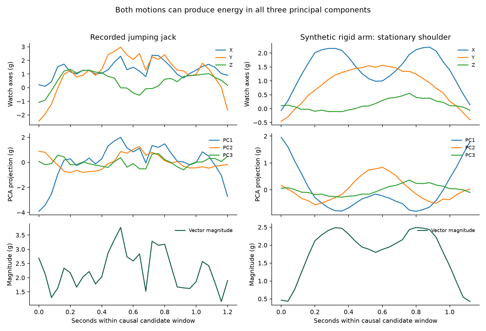

Local feasibility study, 14 November 2026. The watch detector remains unchanged.
Current detector; current detector plus a PCA planarity filter; and current detector plus PCA and sharp-motion evidence. Filters run before three-cycle confirmation, use only the current and previous samples, and reset confirmation when evidence fails. Original candidate and cadence rules remain in use; resetting a run can also change their subsequent adaptive state.
PCA uses a centered 3-by-3 covariance matrix of raw XYZ samples from eight samples before candidate start through current completion (at most 74 samples). The PCA filter requires PC3 to explain at least 0.6% of variance. The stricter filter also requires change in the PC2/PC3 residual of at least 0.3 g per sample RMS and at least 8% of windowed spectral energy between 3 and 10 Hz. These are exploratory thresholds selected using known real recordings and development seeds, not physiological constants.
| Method | Recorded jacks / 20 | Recorded negative counts | Synthetic jacks / 1,600 |
|---|---|---|---|
| Current | 20 | 0 | 1599 |
| PCA filter | 20 | 0 | 1596 |
| PCA + impact filter | 20 | 0 | 0 |

Two hundred separately generated eight-cycle sessions per type, using a new frozen seed. A false dismissal means accumulating at least five false reps. Any false count is the stricter rejection metric. Replays continue past five solely to measure full-session counts. The old synthetic jack generator models wrist waveforms, not a body jump. Its complete failure under the impact filter is evidence of model mismatch, not proof that those physical jacks would fail.


There is no reliable assignment of PC1 to arms or PC2 to jumping. Wrist orientation changes throughout a swing; gravity, arm acceleration and body acceleration all contribute to the measurements. Projection into principal components preserves those ambiguities. For example, the fixed-shoulder arm model can generate all three PCA components without any shoulder displacement.
| Negative hypothesis | Method | Any false count / 200 | False dismissal / 200 | No-false-count rate |
|---|---|---|---|---|
| Wide swings | Current | 126 | 44 | 37.0% |
| Wide swings | PCA filter | 0 | 0 | 100.0% |
| Wide swings | PCA + impact filter | 0 | 0 | 100.0% |
| Overhead arm pattern | Current | 199 | 189 | 0.5% |
| Overhead arm pattern | PCA filter | 198 | 182 | 1.0% |
| Overhead arm pattern | PCA + impact filter | 0 | 0 | 100.0% |
| Arm pattern + braking | Current | 195 | 177 | 2.5% |
| Arm pattern + braking | PCA filter | 195 | 175 | 2.5% |
| Arm pattern + braking | PCA + impact filter | 16 | 2 | 92.0% |
| Rigid arm, fixed shoulder | Current | 72 | 64 | 64.0% |
| Rigid arm, fixed shoulder | PCA filter | 71 | 63 | 64.5% |
| Rigid arm, fixed shoulder | PCA + impact filter | 6 | 3 | 97.0% |
| Arm pattern + shaking | Current | 196 | 182 | 2.0% |
| Arm pattern + shaking | PCA filter | 196 | 182 | 2.0% |
| Arm pattern + shaking | PCA + impact filter | 106 | 47 | 47.0% |
Wide swings increase the old arm-swing generator's X/Z ranges. Overhead and braking patterns deliberately overlap the broad wrist shape used as a positive in the old generator. These analytic traces are hypotheses, not measured false positives. The rigid-arm cohort uses fixed-shoulder angular motion with arm length 0.45–0.75 m and period 0.9–1.8 seconds, including centripetal/tangential acceleration, gravity and wrist-frame rotation. The shaking cohort adds 4–8 Hz wrist motion; it tests whether apparent impact evidence can originate at the wrist.
| Perturbation | Method | Matched / 2,000 | Recall | Negative counts |
|---|---|---|---|---|
| noise_50mg | Current | 2000 | 100.0% | 0 |
| noise_50mg | PCA filter | 2000 | 100.0% | 0 |
| noise_50mg | PCA + impact filter | 2000 | 100.0% | 0 |
| gain_80_120pct | Current | 2000 | 100.0% | 0 |
| gain_80_120pct | PCA filter | 2000 | 100.0% | 0 |
| gain_80_120pct | PCA + impact filter | 2000 | 100.0% | 0 |
| bias_100mg | Current | 2000 | 100.0% | 0 |
| bias_100mg | PCA filter | 2000 | 100.0% | 0 |
| bias_100mg | PCA + impact filter | 2000 | 100.0% | 0 |
| rotation_15deg | Current | 1996 | 99.8% | 0 |
| rotation_15deg | PCA filter | 1996 | 99.8% | 0 |
| rotation_15deg | PCA + impact filter | 1996 | 99.8% | 0 |
| tempo_80_120pct | Current | 2000 | 100.0% | 0 |
| tempo_80_120pct | PCA filter | 2000 | 100.0% | 0 |
| tempo_80_120pct | PCA + impact filter | 1618 | 80.9% | 0 |
| combined | Current | 1922 | 96.1% | 9 |
| combined | PCA filter | 1922 | 96.1% | 9 |
| combined | PCA + impact filter | 1549 | 77.5% | 0 |
One hundred perturbed copies per scenario are sensitivity checks, not additional people or independent recordings. The unchanged FIT files contain 20 true jacks and watch checks/marching; there is no recorded example of the user's newly reported false-positive arm swings. Sensor timestamps are invalid, so time is inferred from file order at 25 Hz.
Do not replace the deployed detector with a PCA-only gate or claim that PCA proves jumping. Test a combined arm-cycle and repeated impact-timing model against actual arm-only negatives and softer true jumps before deployment. Gyroscope data could improve wrist-orientation estimation, but it still does not directly observe feet or whole-body translation. A foot/torso reference sensor or video is useful as validation ground truth.
.venv/Scripts/python.exe -B tools/pca_jump_analysis.py --validate. Rules and seeds are written before test generation. Test seed: 2026111903; stress seed: 2026111904.
Frozen protocol and hashes · Synthetic totals · Every session · PCA features · Real sample timing · Stress totals
PCA decomposes variance into orthogonal directions. Accelerometer tilt estimates are confounded by dynamic and rotational acceleration.